向导演和频道学
一个导演的“风格”，拆开看就是几条他从不违反的规则。把规则认出来，你就能借走它，也能用它来给 AI 指路。
风格是一组规则
你说得出“这像韦斯·安德森”“这很王家卫”，说明这些导演的片子有可以被识别的特征。这些特征不神秘，它们是导演在六组旋钮上做的固定选择：他总用什么构图，镜头怎么动，怎么剪，什么颜色，什么声音。
这一章挑了十几个辨识度最高的导演和几个内容频道，把每一位压缩成三四条规则。目的有两个。一是练眼睛：看过这些拆解，你再看片子会自动开始找规则。二是给你一批现成的参照：对 AI 说“像韦斯·安德森”不如说出那四条规则管用，但两样一起说最管用。
构图和调度
韦斯·安德森：对称，正面，平移
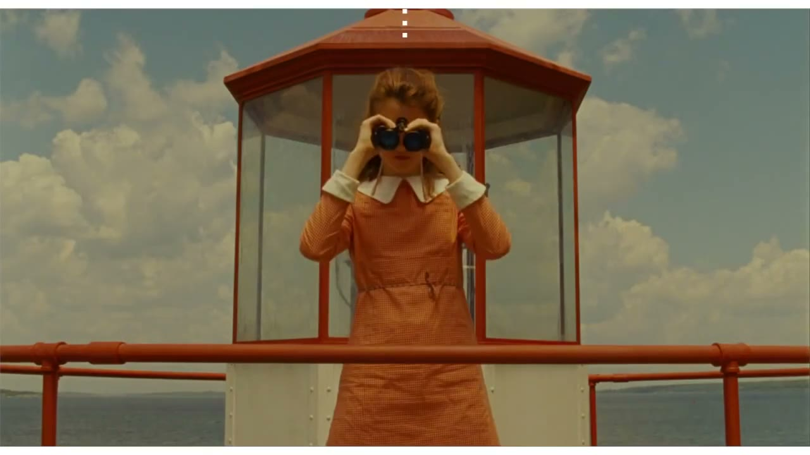
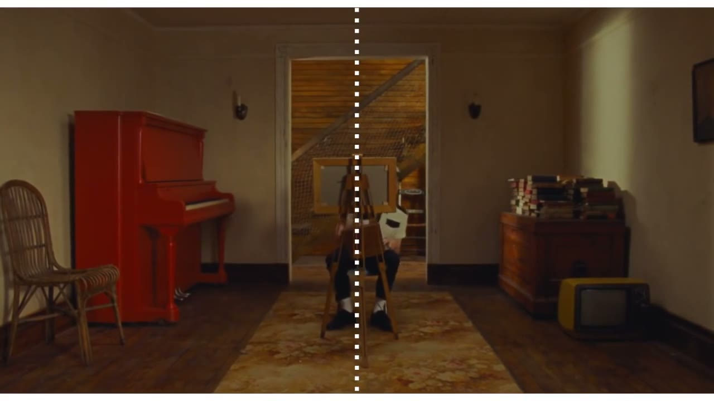

- 主体压在画面正中，左右严格对称。
- 摄影机永远正对着墙，或者与墙成 90 度。几乎没有斜角度。
- 镜头只做三种运动：横移、推拉、九十度的快速摇。全是直线。
- 每部片一套糖果色的色板，从布景到服装全部服从。
- 字幕和章节标题用居中的无衬线体，像图书的扉页。
可以借什么：对称和正面带来的“被精心安排过”的感觉。做产品展示、清单类内容、章节页时很好用。
小津安二郎：低机位，不动，空镜
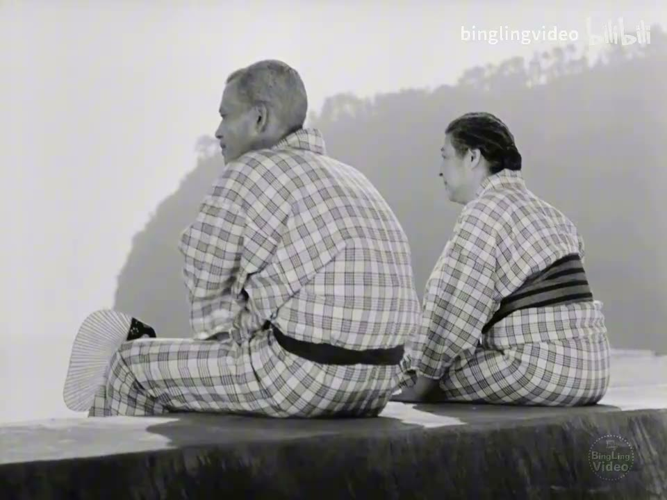
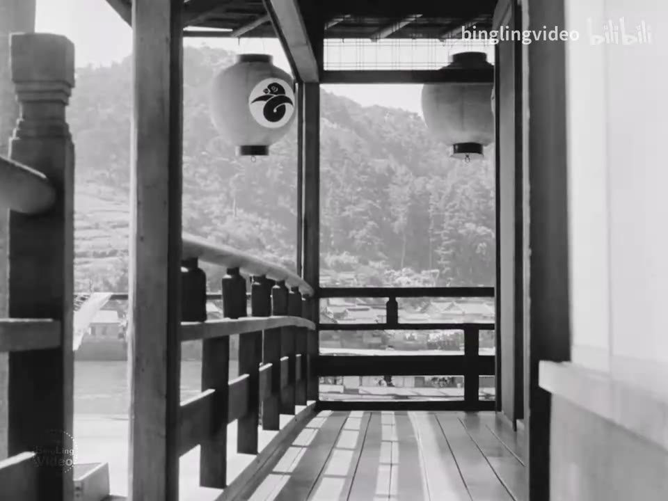
《东京物语》(1953)，导演 小津安二郎
- 摄影机放得很低，大约是人跪坐在榻榻米上的高度，略微仰视。
- 几乎从不移动摄影机，也不用淡入淡出，只有硬切。
- 对话时让人物几乎直视镜头说话。
- 场与场之间不用转场，而是插入几个安静的空镜。影评人叫它“枕镜头”，像诗里的停顿。
可以借什么：空镜作为换气。一段密集的信息之后，放两秒不讲任何事的安静画面，比任何转场都高级。
黑泽明：画面里永远有东西在动
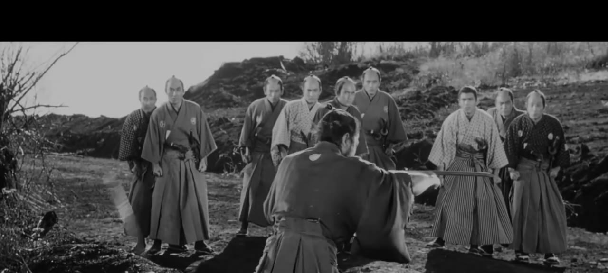
- 画面里总有运动：风、雨、烟、火、旗子、奔跑的人群。天气是他的演员。
- 人物的情绪用身体的大动作表现，而不是靠台词。
- 群像按几何形状安排，前中后景都有人，每个人做不同的事。
- 镜头的运动有明确的起点、过程、终点，一个镜头讲完一件小事。
- 转场爱用划像。《星球大战》的划像就是从他这里学的。
可以借什么：“背景里有东西在动”。静态的画面加一层飘动的元素（雪、尘、光斑、缓慢流动的背景），立刻就有了生气。
斯坦利·库布里克：单点透视
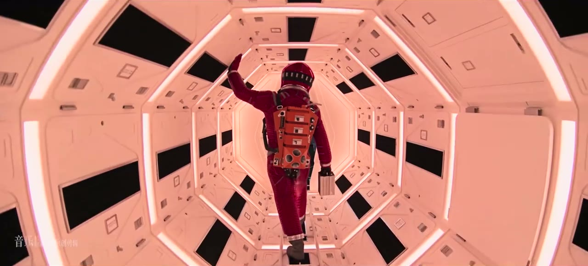
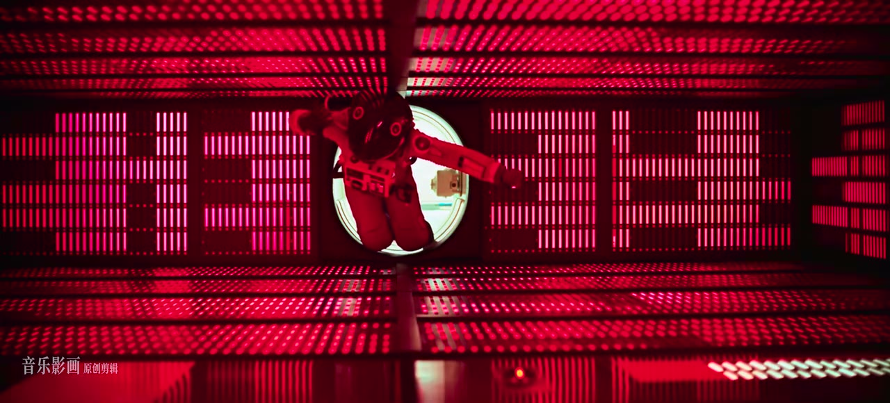
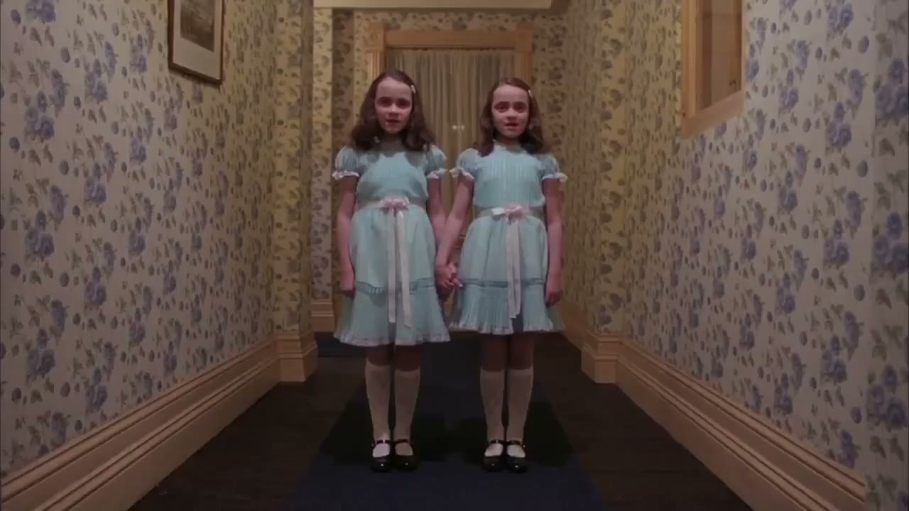
《2001 太空漫游》(1968)、《闪灵》(1980)，导演 斯坦利·库布里克
- 走廊、房间、道路，所有的线条都汇聚到画面正中的一个点。主体就站在那个点上。
- 对称，但和安德森的可爱不同，他的对称是冰冷、压迫的。
- 缓慢而稳定的推拉和跟拍。《闪灵》里跟着三轮车穿过酒店走廊的镜头，是斯坦尼康最早的经典用法之一。
- 人物抬起眼睛、低着头直视镜头，后来被叫作“库布里克凝视”。
可以借什么：单点透视加慢推，是制造“庄严”或“不安”最省事的组合。
剪辑和节奏
爱森斯坦和希区柯克
这两位前面已经专门讲过。爱森斯坦教的是：把冲突的镜头撞在一起，把一个瞬间用几十个镜头拉长。希区柯克教的是：让观众比角色先知道危险（桌下有炸弹，角色还在聊天），悬念就来自这个信息差；以及用纯粹的画面讲故事，他自称能把任何一场戏拍成默片观众也看得懂。
埃德加·赖特：把琐事剪成动作片
他的片段在节奏一章出现过。规则：
- 日常动作（倒茶、开门、穿衣）拆成一连串不到半秒的大特写，每个配一声夸张的音效。
- 用急推和甩镜做强调和转场，一切都卡在音乐上。
- 笑点藏在画面里：人物从画框外突然出现，背景里发生的事，镜头一摇露出的东西。
- 场景之间用匹配剪辑和遮挡转场连接，很少有一刀“普通的”切换。
可以借什么：“快切特写加音效”这一招，用在教程的准备步骤、Vlog 的出门流程、产品的开箱上，几秒钟讲完一个过程，还很好看。
克里斯托弗·诺兰：多条时间线交叉
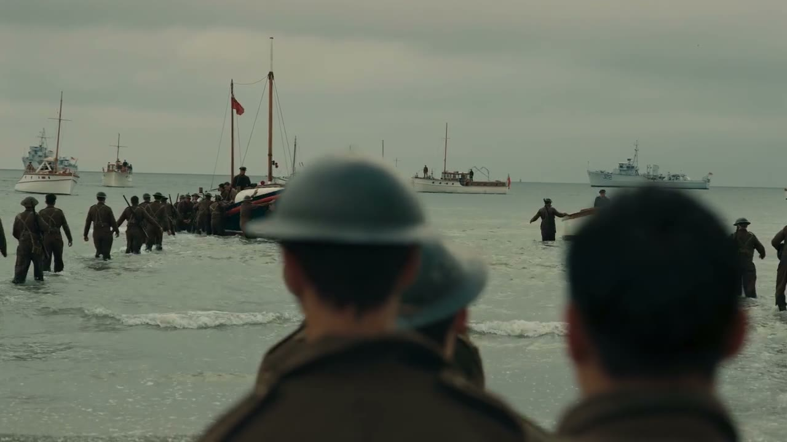
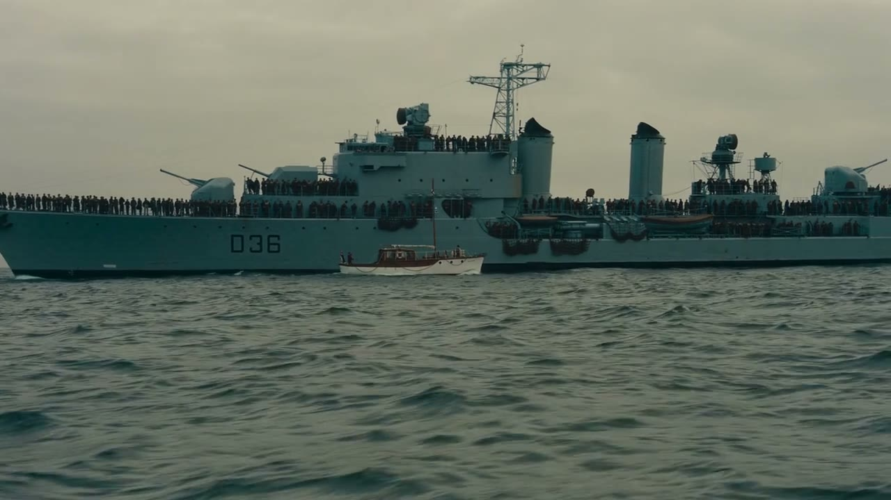
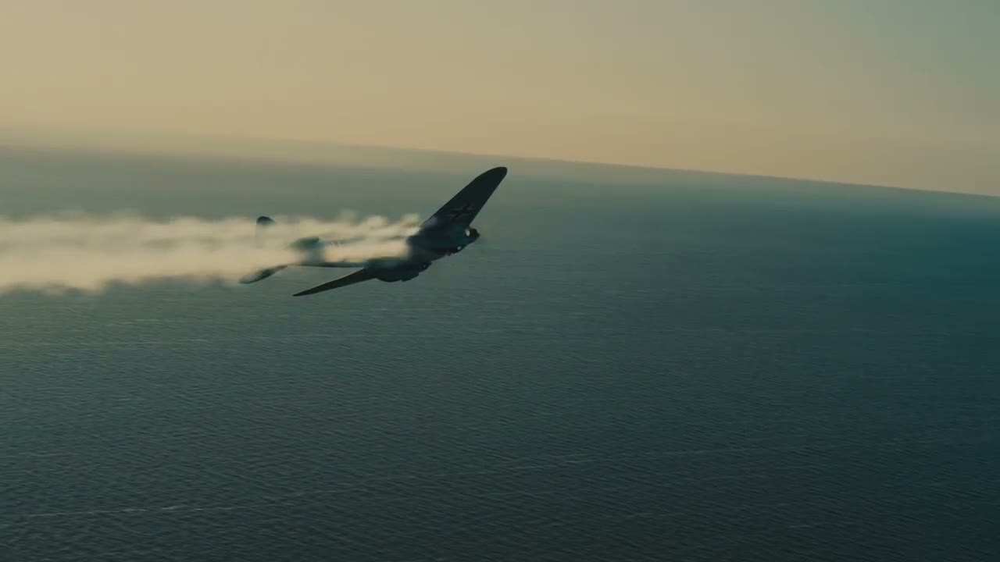
《敦刻尔克》(2017)，导演 克里斯托弗·诺兰，摄影 霍伊特·范·霍特玛。三条长度不同的时间线被交叉剪在一起，在结尾的同一刻汇合。
- 把两三条不同时间、不同地点的线索交叉剪在一起，越到后面切得越快，最后汇合。《盗梦空间》的多层梦境、《敦刻尔克》的陆海空三条线都是这个结构。
- 配乐持续地往上爬，中间几乎不停，把交叉的线索捆成一股。
- 偏爱实拍和大画幅，画面厚重。
可以借什么：讲两件有关联的事时，不要讲完一件再讲另一件，交叉着讲，最后让它们在同一个结论上相遇。
达米恩·查泽雷：剪辑跟着音乐走
《爆裂鼓手》和《爱乐之城》都出自他。规则很单纯：音乐是骨架，画面的每一刀、每一次甩镜、每一个推近，都对着音乐里的某个事件。他的片段是学“声画同步”最好的教材，前面运镜和节奏两章各用了一段。
乔治·米勒：中心构图加极速剪辑
《疯狂的麦克斯：狂暴之路》的方法：每个镜头的视觉重点都放在画面正中，这样镜头可以切得极快而观众不会跟丢。它证明了“快”和“清楚”可以兼得，前提是你管住了观众的眼睛。
光和颜色
王家卫：抽帧，霓虹，前景遮挡

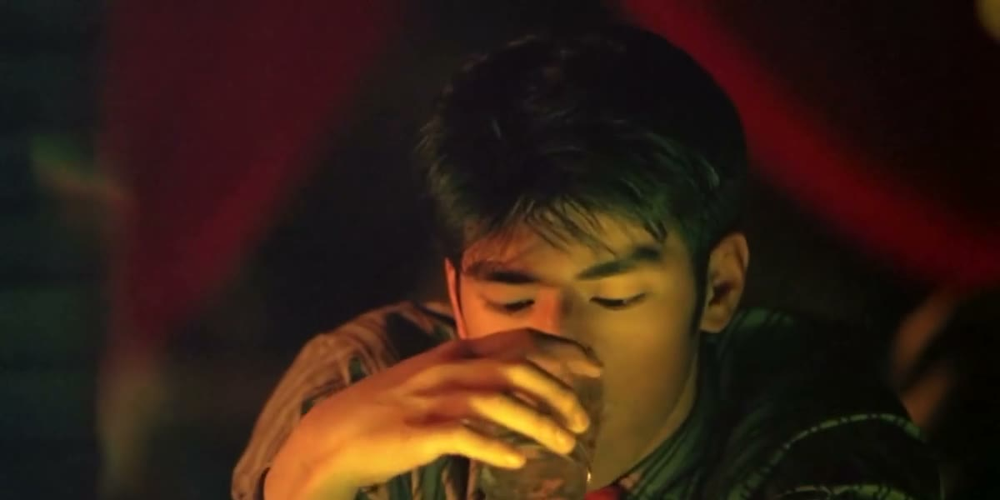

《重庆森林》(1994)、《花样年华》(2000)，导演 王家卫
- 抽帧：用很慢的快门拍，再把帧重复印几次。运动的东西拖出残影，人物却像定在那里。那种“周围都在飞逝，只有我是静止的”的孤独感就是这么来的。
- 颜色高饱和但画面很暗。霓虹的红、荧光的绿、钨丝灯的黄。
- 人物很少被完整地看到：隔着玻璃、被门框挡住一半、只出现在镜子里。
- 画外的独白贯穿全片，说的是数字和日期：“还有 0.01 公分”“五月一号”。
- 音乐反复用同一首。
可以借什么：前景遮挡。在主体和镜头之间放一层虚化的东西，画面立刻有了窥视感和层次。还有独白里具体的数字，它比形容词动人。
大卫·芬奇：看不见的精确
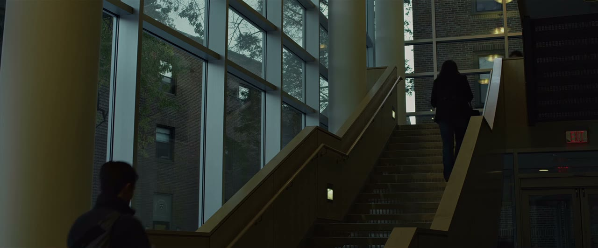
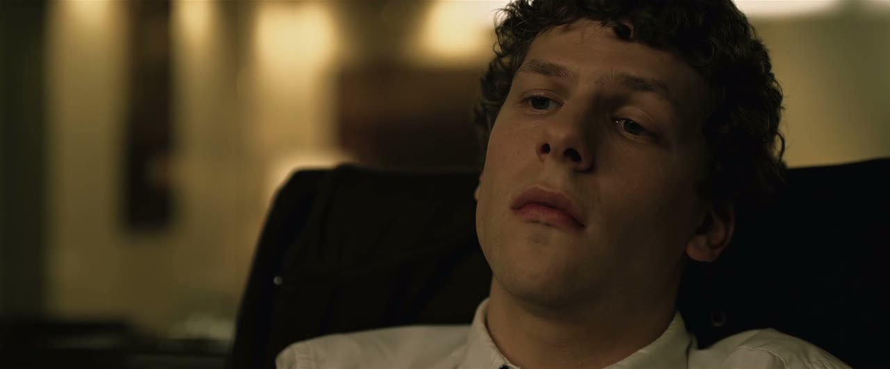
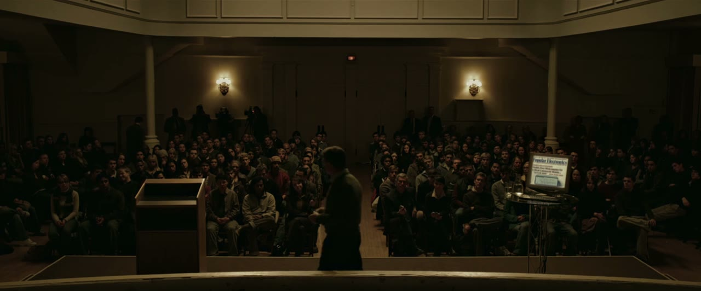
《社交网络》(2010)，导演 大卫·芬奇，摄影 杰夫·克罗嫩韦思
- 镜头的运动和人物的运动完全同步。人站起来，镜头同时上升同样的幅度；人停，镜头停。因此你几乎感觉不到镜头在动，只觉得“稳”。
- 几乎不用手持。一旦出现手持，就说明有事不对了。
- 低饱和、偏黄绿的冷调，暗部很深。
- 对白剪得极密。《社交网络》的开场，两个人在酒吧五分钟说了别人十分钟的词。
可以借什么：“镜头只在主体动的时候动，并且动得一模一样”。虚拟运镜跟随一个移动的元素时，照这个要求做，稳定感会非常强。
丹尼斯·维伦纽瓦和罗杰·迪金斯：巨大，安静，单色


《银翼杀手 2049》(2017)，导演 丹尼斯·维伦纽瓦，摄影 罗杰·迪金斯
- 人很小，环境很大。大量的大远景，人只是画面里的一个剪影。
- 每个场景只有一个主色：橙、青、灰白、品红。
- 雾、沙尘、烟让光有了体积，也把背景简化成一片干净的色块。
- 节奏慢，镜头长，声音以低沉的氛围音为主。
可以借什么：一个场景一个颜色。做分章节的内容时，每一章换一个主色，观众不看标题也知道换章了。
内容频道
导演离日常太远的话，看看这些频道。它们各自发明或定型了一种今天被大量模仿的视频语言。
| 频道 | 它的规则 | 可以借什么 |
|---|---|---|
| Vox | 纸质拼贴的质感；地图、档案照片、图表被“摆”到桌面上；手绘的标注；记者偶尔出镜 | 用真实的档案材料讲故事；给素材一个统一的“纸”的容器 |
| Kurzgesagt | 扁平插画，深色底高饱和；每条片围绕一个大问题；结构严谨，有来源 | 用一套统一的插画语言处理任何题材；用可爱的画风讲沉重的话题 |
| 3Blue1Brown | 黑底，用程序生成的数学动画；一切概念都被画成会动的几何图形；一个声音娓娓道来 | “演出来”而不是“说出来”：让抽象的东西在屏幕上真的发生 |
| Johnny Harris | 地图和卫星图上的手绘标注；本人出镜；文件、截图大量推近；电影感的调色 | 地图推近加手绘圈注；用第一人称的调查过程做结构 |
| Apple 的产品片 | 大量留白；产品是唯一的主角；镜头贴着产品表面缓慢移动；文字极少且极大 | 克制。一个画面只放一个东西 |
| Casey Neistat | 手持自拍；延时摄影过渡；跳切；音乐驱动；一天的时间线 | Vlog 的全部语法都是他定型的 |
| MrBeast | 前五秒说清整条片的赌注；没有一秒空镜头；屏幕上永远有进度（倒计时、金额、人数）；每隔几十秒一个新的升级 | 留存的工程学：钩子、持续的进度感、不断加码 |
| 影视飓风 | 电影级的画面质量做科技和知识内容；段落之间用高质量的空镜和延时过渡 | 把实拍的质感当作内容的可信度 |
怎么“偷”才对
借鉴风格有一个陷阱：把一个导演的所有特征全搬过来。那样做出来的是拙劣的模仿，而且他的规则未必适合你的内容。更好的办法是只拿一两条。
- 拆把你喜欢的那条片或那位作者，按六组旋钮各写一句：构图怎样，怎么动，怎么剪，什么颜色，什么声音，字怎么处理。
- 挑问自己：让我觉得“好”的到底是哪一条？通常只有一两条是核心，其余是陪衬。
- 换把那一两条规则用到你自己的内容和素材上，其他的旋钮按你自己的需要来定。
- 守选定之后全片执行，不要中途换。风格来自坚持，不来自规则本身有多特别。
反过来也成立。当你看多了、拆多了，你会发现自己在某些旋钮上有固定的偏好：总是喜欢留白多的，总是受不了回弹，总是被暖色打动。把这些偏好写下来，就是你自己的规则。那份规则比任何一个大师的名字都更适合交给 AI。
片例截图与片段仅用于学习与评述，版权归原作者与出品方所有，出处见片单与出处。